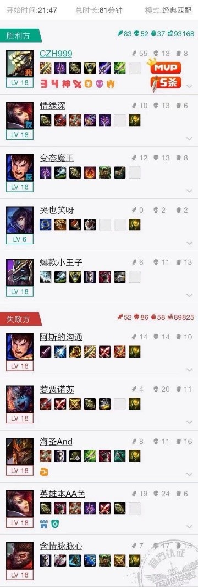
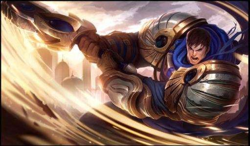
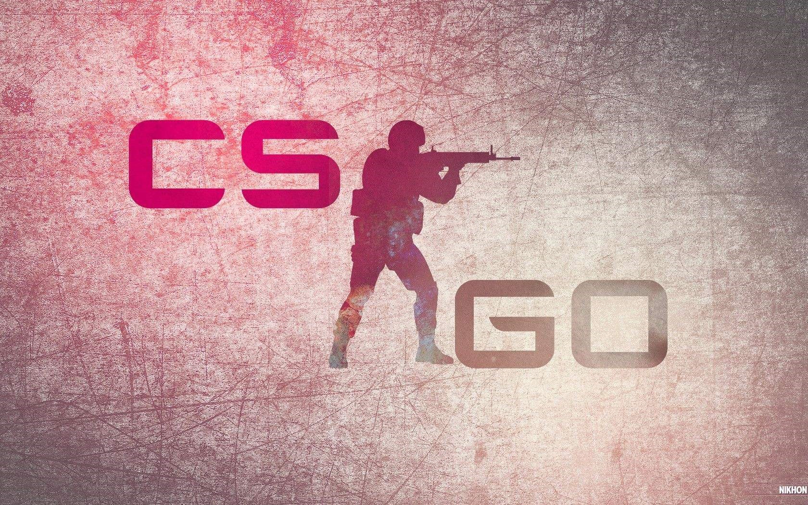
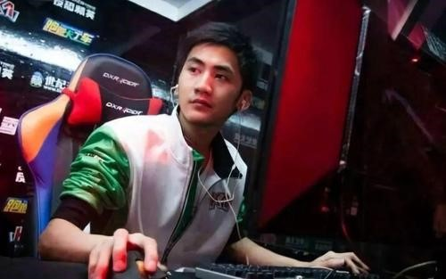
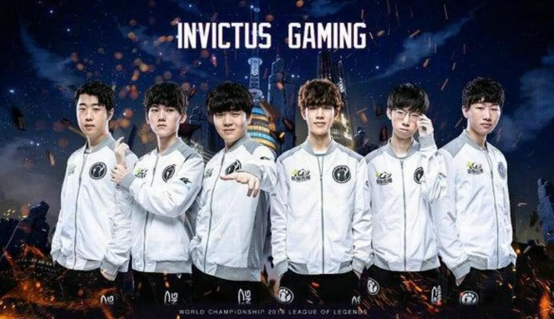

LOL

战绩

盖伦
平时的娱乐主要是打电子游戏。本人英雄联盟水平较高，最喜欢打上路，爱发育，最喜欢的英雄是德玛西亚之力盖伦。
CS·GO

CS·GO

选手
也玩FPS游戏，主要玩CSGO。本人对军事很感兴趣，喜欢枪也喜欢枪战，让人感觉很热血。
IG战队

IG战队
日常生活中也关注LOL的相关赛事，为他们在世界舞台上为中国争光而感到激动。最喜欢的战队是IG，因为他们曾拿到了世界冠军，也是中国的第一个冠军。